| PERSONAL | |
|---|---|
| Name | Guan-Cheng Dong |
| Birthday | 1996/08/15 |
| Relationship | single |
| Nationality | Taiwanese |
| Languages | Chinese,English |
| CONTACT | |
|---|---|
| Mobile | 0919-553-731 |
| Home | 07-5536160 |
| gcd0815.cm07g@nctu.edu.tw |
| PERSONAL TRAITS |
|---|
Stress resistant
Cooperation
Creativity
Passion
Proactive
Responsibility
| LINKS | |
|---|---|
| facebook/guan.cheng.dong0815 | |
| instagram/billd0815/ | |
| www.linkdin.com/user_name |
EDUCATION BACKGROUND
-
 master
master
-
2018/9~2020/8

National Chiao Tung University
Institute of Biomedical Electronics and Optoelectronics (BME)


-
-
bachelor
-
2014/9~2018/6
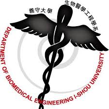
I-Shou University (medical school)
Department of Biomedical Engineering


-
WORK EXPERIENCE
-
2019/8~2020/5
9 months-
![logo 輸入錯誤]()
聯詠科技
- 工作內容:
- 可以因應各項AI 的需求，需要建立對應的Dataset，用以加速各項AI 應用的開發 (python)。 (詳細內容可以查看專案成就)
- 能撰寫shell script 進行系統管理及檔案操作。
- 對數位電視系統，Test Plan執行與測試，針對發生問題進行操作流程定位。
- 對顯示器系統，Test Plan執行與測試，針對發生問題進行操作流程定位及自動測試環境架設。
(3.4點主要是利用Linux的語言對底層的log做存取，當測試發生問題時需要codedump或bug report時，
需要擷取底層的訊息回報給RD進行分析，燒機並復現問題。) - 由jira上撰寫英文報告通知各上級主管回報狀況。

 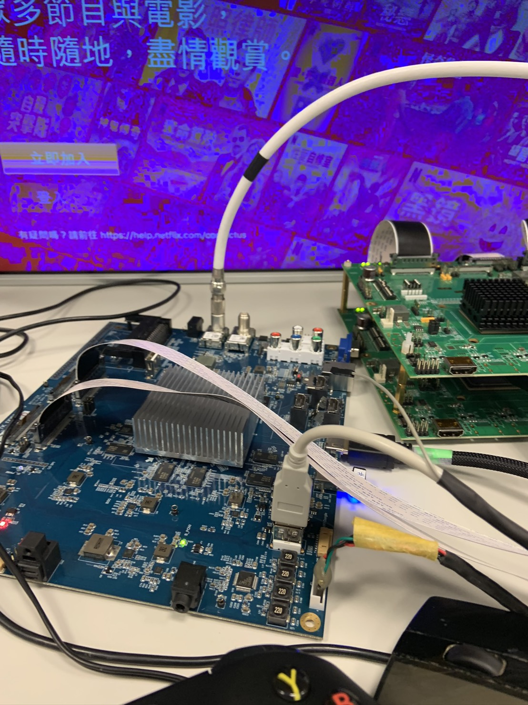
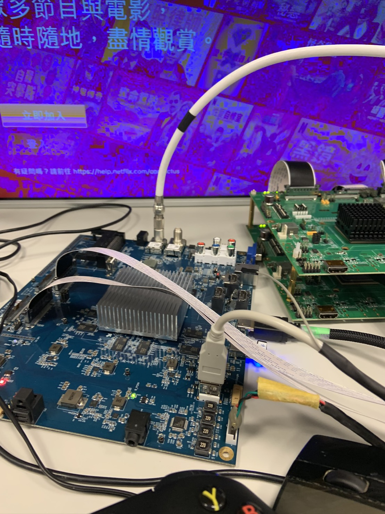
-
-
2017/7~2017/9
2 months-

高雄榮總
-
工作內容:
- 實習期間參與許多專業的醫療儀器教育訓練 如電燒刀、內視鏡、超音波、X 光、MRI、CT、PET/CT、血液透析機、麻醉機、
葉克膜、高壓氧艙、洗腎機及達文西手術機械手臂等 - 在兩個多月的時間深入完成「EVITA 4 呼吸器氣路介紹及保養校驗之專題計畫」，並向各大醫療廠商(Philips, SIEMENS, GE)
進行儀器報告介紹 ，並且能夠結合實際操作，並瞭解各式大型醫療器材原理結構及運作。 - 在實習期間也到過 (Philips, SIEMENS, GE)，進行參訪及學習


- 實習期間參與許多專業的醫療儀器教育訓練 如電燒刀、內視鏡、超音波、X 光、MRI、CT、PET/CT、血液透析機、麻醉機、
-
SOFTWARE
-
HTML5
熟悉且能完整運用對網頁的內容和架構，能建構自己的網站 -
CSS3
熟悉各式語法及知識，能藉由構建好的HTML結合CSS對網頁進行排版與設計，並且可以進行響應式(RWD)網頁設計 -
LabVIEW
可透過MyRIO架設接到PPG電路進行血壓的量測，並透過UI介面端進行波形輸出 -
C++
熟悉C++語法及各式運算 -
Matlab
藉由matlab強大的數學運算能力對大腦訊號進行處理及分析 -
Python
熟悉python語法及函式庫，並能透過CUDA和CuDNN結合GPU來進行深度學習的運算， 建構各式deep learning model，對大腦訊號進行分類 -
Linux
可以透過基礎的語法以Shell script來自動管理作業系統 -
JavaScript
熟悉JS基礎知識、函數、陣列，並能以所建構的個人網頁中，更進階的設計互動式的網頁
證照
- 國家考試院專門職業及技術人員外語領隊證照
- 劍橋大學國際商務英語能力測驗(BULATS) ALTE Level 2
- GS1-EPCIE物聯網工程師
- Microsoft Professional Program(MPP)-Artificial Intelligence
- Microsoft Professional Program(MPP)-python to data science
- Course Certification_機器學習基石上 (Machine Learning Foundations)--- Mathematical Foundations
(National Taiwan University and offered through Coursera) - Course Certification_Python for Machine Learning and Deep Learning
(Kaggle competition and the other)
TOPIC:ASHRAE-Great Energe Predictor III for the prize


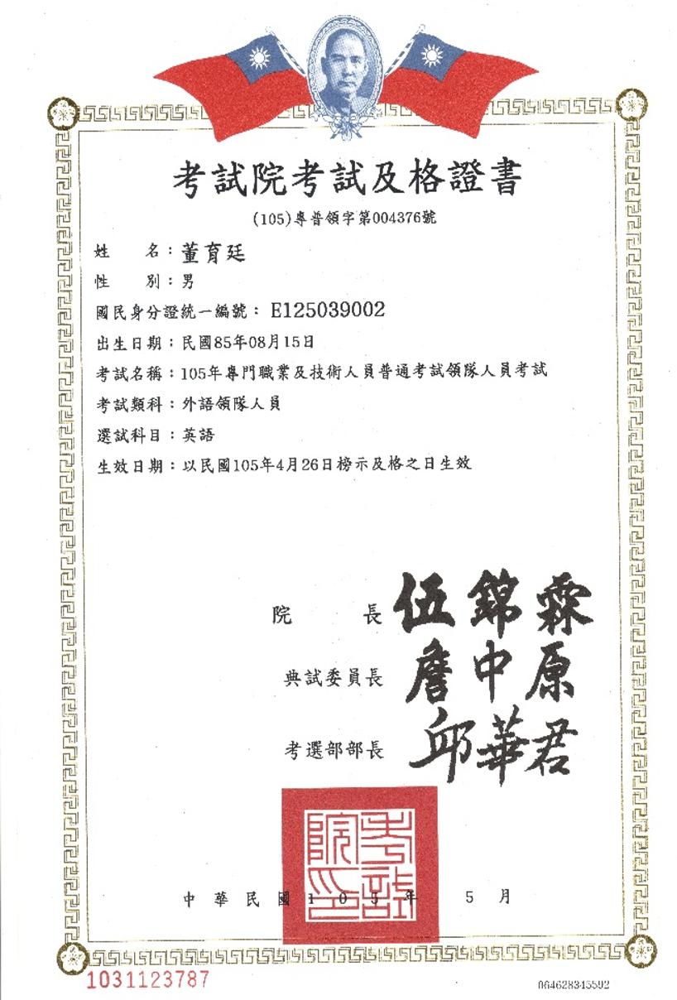
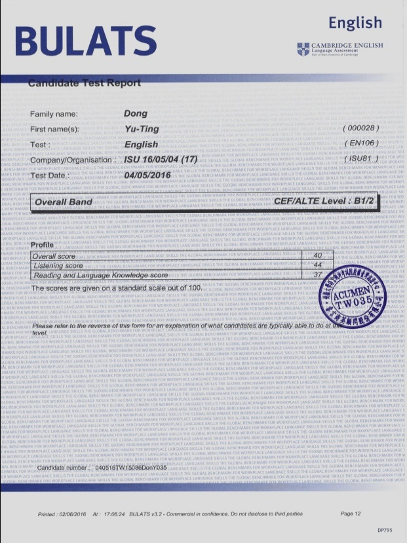
獲獎經歷 (HONORS AND AWARDS)
- 交通大學生醫創意競賽_第二名
- SPIE - The International Society for Optical Engineering 投稿發表
Biomedical Imaging and Sensing Conference 2019, BISC 2019 - Yokohama, Japan
Duration: 22 Apr 2019 → 26 Apr 2019
TOPIC: Study on the option of the optimal time length of measurement in resting-state fNIRS brain imaging - 2017生物醫學工程科技研討會投稿發表 Duration:17 Nov → 18 Nov
TOPIC: Feasibility Assessment of Vascular Age by Using the Blood Pressure Slope in Diastolic Period - 2017生物醫學工程專題製作成果壁報競賽榮獲最佳人氣獎
- 2017生物醫學工程專題製作成果壁報競賽榮獲成果優等獎
- 大義書卷獎學金第1名
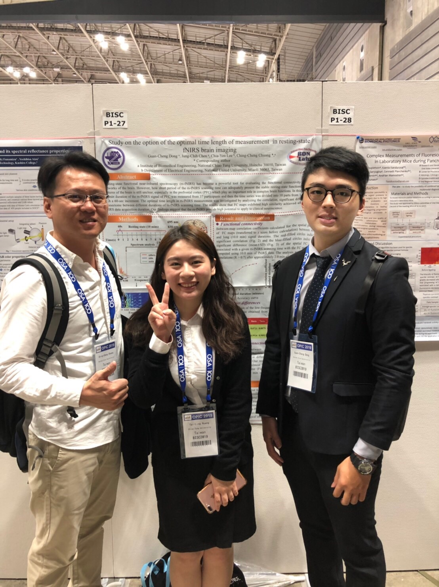
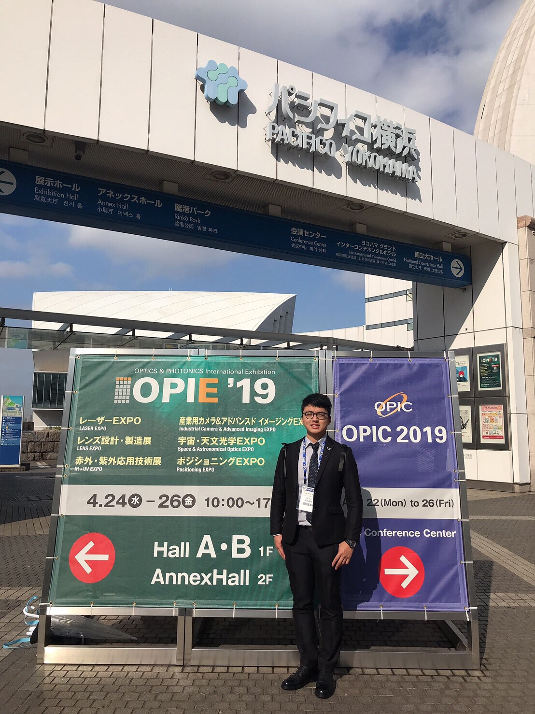
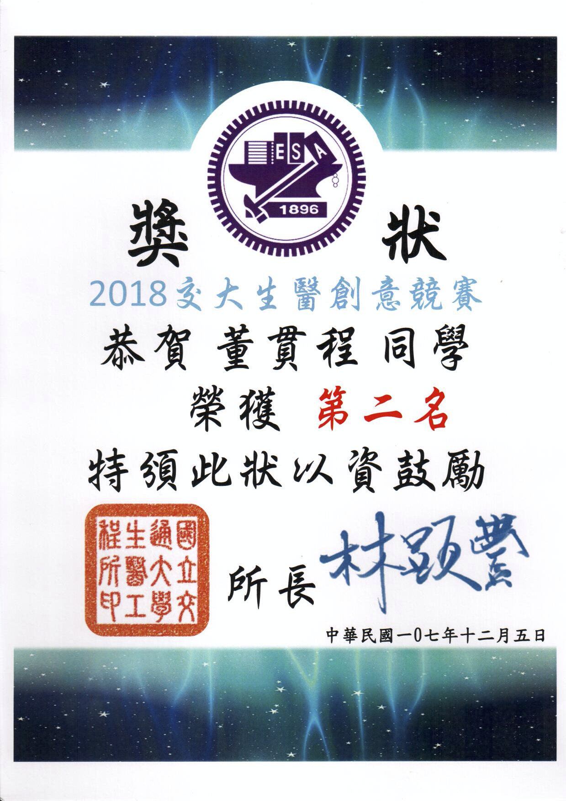
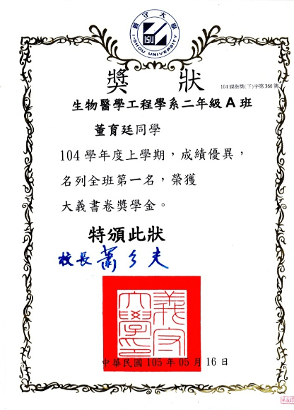
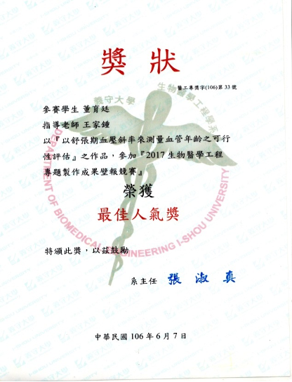
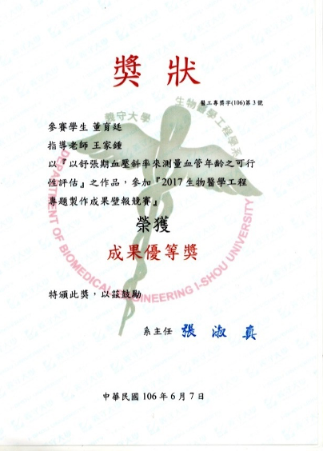
專業經歷 (PROFESSIONAL EXPERIENCE)
- 課程名稱:生醫創新設計與臨床需求 ->協助課程協作及執行、作業批改
Teaching Assistant, National Chiao Tung University, 2014-2015.
- 106年大專學生研究計畫申請-利用簡易測量技術來開發血管年齡指標 (申請條碼:106CFD1300055)
Research item
- 多功能無線貼片式近紅外光學組織檢測系統研發 - 以裘馨氏肌肉失養症之臨床應用切入研究(MOST 107-2221-E-009-015-MY3)
->硬體協作及軟體分析 - 以非侵入性激發試驗來定量評估末梢微循環反應功能及其臨床運用(1/3)兼任研究助理 (MOST 105-2221-E-214-012-MY3)
->軟體分析(MATLAB, C)及臨床收案量測 - 無線可穿戴式關節醫療電子裝置研發與試驗(1/2) (MOST 105-2632-E-214-002)
->協助簡易硬體電路設計及軟體分析
Research Assistant
專案成就列表
Python_web-crawler_stock series
專案介紹:
本專案藉由Python網頁爬蟲透過整合selenium及beautifulsoup套件，實現查詢式的網頁資料爬取，對於想要進行大量資料的分析，能夠提升資料取得的效率，來實現自動化查詢的網頁爬蟲 台灣股市證卷交易所的股市為例下方為作品1->code_github所在網址
guan cheng github_源代碼_作品1
Return top
Python_WebCrawler-threading_photo series
專案介紹:
網路爬蟲解析圖片網站+多執行緒蒐集巨量資料_圖片 開發目的:因應 AI_dataset 快速建立，需要大量圖片輸入，藉由此專案開發能使大量的同類圖片下載，進而加速工作效率， 本專案將以圖片為例，透過網路爬蟲的方式，從網路上收集大量的資料，並結合平行化多執行緒來加速下載下方為作品2->code_github所在網址
guan cheng github_源代碼_作品2
Return top
自傳
我是董貫程，是位對寫程式抱有熱情的女生。大一大二兩年修習關於C/C++的課程， 並用自己喜歡的遊戲分別寫出三份專題。大四開始接觸到python、Machine Learning相關領域， 開始接觸到自走車、機器人等領域，學習軟硬體的整合。大四開始就讀電控所碩一，進到機器人領域的宋開泰教授實驗室， 主要對於機械手臂與影像、機器學習方面進行研究，且從無到有設計出一台機械手臂。目前的論文是以手術動作學習為主要目的。 對事情有一定會完成的決心，有責任心，也有一顆希望能充實自己的心。雖然接觸到很多各種領域的東西， 但只要有機會學習就一定會把事情做好。
HOBBIES
-
music
-
drum
-
movie
-
books
-
TV
-
baseball